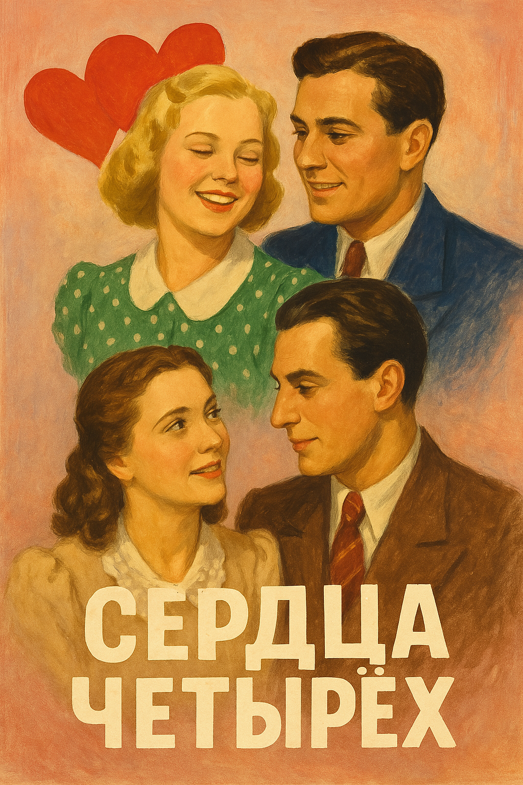

Сердца четырех
О фильме
Комедия рассказывает о забавных переплетениях судеб двух сестёр Мурашовых и их возлюбленных в предвоенной Москве. Строгая математик Галина и легкомысленная студентка Шурочка попадают в различные комичные ситуации на городской даче, где также оказываются военный Пётр Колчин и биолог Глеб Заварцев. История развивается как классический водевиль, полный жизнерадостных эпизодов и остроумных диалогов.
Несмотря на первоначальную критику, фильм стал пятым по популярности в 1945 году, собрав почти 20 миллионов зрителей. Он вызвал ностальгию по довоенному времени и помог поднять дух общества в послевоенный период.
Кадры из фильма
Видение ChatGPT-4
Альтернативный вариант постера, созданный нейросетью
Фильм "Сердца четырех" представляет собой интересный пример того, как советский кинематограф в военные годы обращался к жанру комедии. Это была попытка поддержать дух зрителей, показав, что даже в тяжелые времена есть место радости и любви. ChatGPT-4
Историческая ценность фильма заключается в том, что он был снят до войны, но выпущен только в 1944 году. Это создало уникальный эффект - зрители видели на экране беззаботную довоенную жизнь, что усиливало ностальгию и надежду на возвращение к миру. DeepSeek-R1
Историческая ценность фильма заключается в том, что он был снят до войны, но выпущен только в 1944 году. Это создало уникальный эффект - зрители видели на экране беззаботную довоенную жизнь, что усиливало ностальгию и надежду на возвращение к миру. Grok 3
Историческая ценность фильма заключается в том, что он был снят до войны, но выпущен только в 1944 году. Это создало уникальный эффект - зрители видели на экране беззаботную довоенную жизнь, что усиливало ностальгию и надежду на возвращение к миру. Qwen2.5-Max
Историческая ценность фильма заключается в том, что он был снят до войны, но выпущен только в 1944 году. Это создало уникальный эффект - зрители видели на экране беззаботную довоенную жизнь, что усиливало ностальгию и надежду на возвращение к миру. Gemini 2.5 Pro
Историческая справка
Фильм был полностью готов в феврале 1941 года, но получил запрет из-за обвинений в "оторванности от действительности". Премьера состоялась только в декабре 1944 года, когда потребовались оптимистические фильмы о мирной жизни. Съёмки проходили в реальных локациях Москвы: на Ленинских горах, площади Революции, Театральной площади, Большой Калужской улице. Сюжет основан на классическом водевиле.
Интересные факты
- Для восстановления фильма в 1988 году пришлось вернуть вырезанные ранее кадры с изображением Сталина
- В картине можно увидеть редкий автомобиль Ford Prefect 93А Tourer с открытым кузовом
- Актёр Андрей Тутышкин, сыгравший старика-профессора, был моложе некоторых своих "студентов"
- На руке персонажа Глеба Заварцева видна татуировка с инициалами исполнителя роли - ПШ
- Во время показа математических занятий демонстрируется реальное доказательство неравенства Коши
В главных ролях
 Людмила
Целиковская
Шура
Людмила
Целиковская
Шура
 Евгений
Самойлов
Пётр Никитич
Евгений
Самойлов
Пётр Никитич
Создатели фильма
- Режиссёр-постановщик: Константин Юдин
- Авторы сценария: Алексей Файко, Анатолий Гранберг
- Оператор: Николай Власов
- Композитор: Юрий Милютин
- Художник: Георгий Гривцов
- Звукооператор: Вениамин Киршенбаум
- Монтажёр: Лев Фелонов
- Директор картины: П. Пашков
Дата выхода: 9 декабря 1944 года
Премьера: Москва